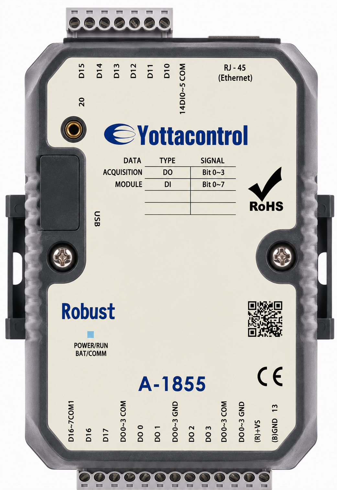

| 型號 | A-1855 |
|---|---|
| 工作電壓 | 10~30VDC / 24VAC |
| 數位輸入（隔離） | 8*Isolation DI；status low：<1VDC；status high：>5~30VDC |
| 數位輸出（隔離） | 4*（Motor Driver） |
| 數位輸出連續電流 | 8-60VDC（1.75A） |
| Ethernet 通訊速率 | 10/100Mbps |
| 數位輸出入隔離 | YES（5000VDC） |
| 輸入切換速度 | 10HZ |
| 輸出切換速度 | 10HZ |
| 操作溫度 | −20 to +75 °C |
| 防護等級 | IP20 |
| 安裝方式 | 35 mm DIN rail or Flush mounting |
| 尺寸（W x H x D） | 76.4 × 118.2 × 38.5 mm |
| 通訊介面 | USB + Ethernet |
| 通道獨立設定 | YES |
| Address 0X | Item | NOR | INIT* | NOTE |
|---|---|---|---|---|
| 00001~00016 | 0~15 DI Input Signal | R | R | |
| 00017~00032 | 0~15 DO Output Value | R/W | R/W | |
| 00033~00048 | 0~15 Power On Digital Output Value | R | R/W | |
| 00049~00064 | 0~15 Communication Fail Safe Value | R | R/W | |
| 00129~01152 | 0~1023 Auxiliary Memory (M Flag) | R/W | R/W |
| Address 4X | Item | NOR | INIT* | NOTE |
|---|---|---|---|---|
| 40177 | Communication Fail Safe Time Setting Value | R | R/W | 0~65535:Disable~65535msec |
| 40178 | All DI Value | R | R | |
| 40211 | Module Name 1 | R | R | |
| 40212 | Module Name 2 | R | R | |
| 40213 | Version 1 | R | R | |
| 40214 | Version 2 | R | R | |
| 40215~40220 | 1~6 Mac Serial Number | R | R | |
| 40306~40369 | 0~63Analog Auxiliary Memory (AM Flag) | R/W | R/W | 0~65535 |
| 40500~40503 | Ethernet IP | R | R/W | IP:x.x.x.x default : 192.168.1.1 |
| 40504~40507 | Ethernet MASK | R | R/W | MASK: x.x.x.x default:255.255.255.0 |
| 40508~40511 | Ethernet GATEWAY | R | R/W | GATEWAY: x.x.x.x Default:192.168.1.1 |
| 40512 | Ethernet Modbus ID | R | R/W | INIT*: 0 ,NOR:1~255 |
| 40513 | Ethernet LOCAL PORT | R | R/W | 1~65535 Default :502 |
| 40514 | Ethernet REMOTE PORT | R | R/W | 1~65535 Default:2000 |
| 40515 | Ethernet DHCP Enable | R | R/W | 0:ENABLE(default) 1:DISABLE |
| 40516 | Ethernet PROTOCAL | R | R | 0:Modbus TCP/IP(default) |
| 40518~40523 | MAC ADDRESS | R | R | EX: 00-05-5D-E8-0F-A3 |